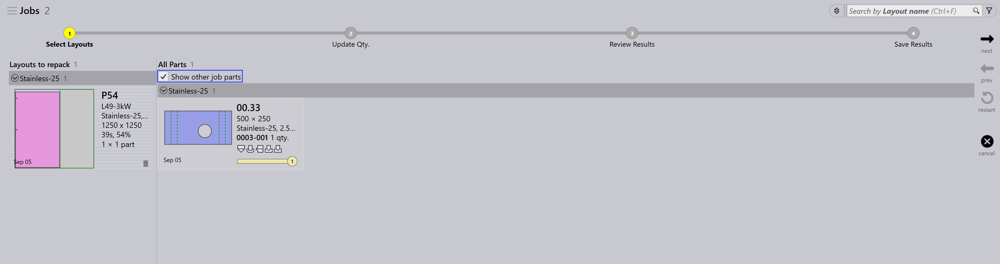

Przepakowywanie
TruSmartCAM nie posiada oddzielnego modułu przepakowywania. Zamiast tego przepakowywanie jest obsługiwane za pośrednictwem opcji na poziomie zadania, które zapewniają elastyczność w sposobie łączenia części.
Istnieją trzy sposoby wykonania przepakowywania.
-
Przepakowywanie za pomocą Maks. liczba detali z wielu zadań.
-
Ręczne przepakowywanie za pomocą interaktywnego kreatora Dodaj detale….
-
Ręczne przepakowywanie za pomocą TecZone.
Przepakowywanie za pomocą Maks. liczba detali z wielu zadań
-
Aby włączyć tę opcję, przejdź do fabryka → ustawienia → Zadanie → Ustawienia układania → Maks. liczba detali z wielu zadań.

-
Po włączeniu ta opcja pozwala na grupowanie części z różnych zadań podczas automatycznego zagnieżdżania lub interaktywnego zagnieżdżania, co skutkuje połączonym pakowaniem lub zagnieżdżeniem.
-
Na przykład:
-
Zadanie-1 ma 1 część, Zadanie-2 ma 1 część.
-
Z włączonym Maks. liczba detali z wielu zadań, TruSmartCAM może przepakować te 2 części w jedno zoptymalizowane zagnieżdżenie.
-


-
Bez tej opcji części z każdego zadania pozostają oddzielone podczas zagnieżdżania/pakowania z różnymi nazwami układów.
-
Przepakowywanie może być również wykonane ręcznie bez włączania tej opcji.
Ręczne przepakowywanie za pomocą kreatora dodawania części
-
Z widoku układu wybierz części, które chcesz przepakować.
-
Kliknij prawym przyciskiem myszy na część i wybierz Dodaj detale… z panelu układu.

-
Postępuj zgodnie z instrukcjami w kreatorze, aby zakończyć przepakowywanie.
-
Wybierz Pokaż inne detale zadania i dodaj je do bieżącego zadania.

-
Sprawdź zmiany i potwierdź przepakowywanie.

Aby uzyskać więcej szczegółów, zobacz Add Parts.
Ręczne przepakowywanie za pomocą TecZone
-
Otwórz TecZone, klikając
 .
.

-
W interfejsie TecZone kliknij Add.

-
Pojawia się nowe okno, w którym możesz wybrać części do przepakowania. Kliknij Pokaż…, a następnie wybierz Inne detale zadania. Po dokonaniu wyboru kliknij _Wybierz.

-
Pojawia się nowe okno, w którym możesz określić, gdzie część ma zostać przepakowana.

-
Kliknij Zapisz zmiany w Praxis, a przepakowyny układ będzie dostępny w TruSmartCAM.